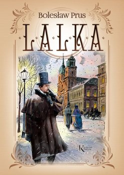
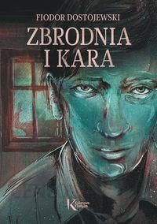
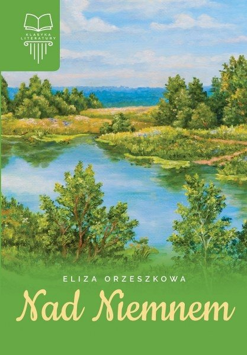
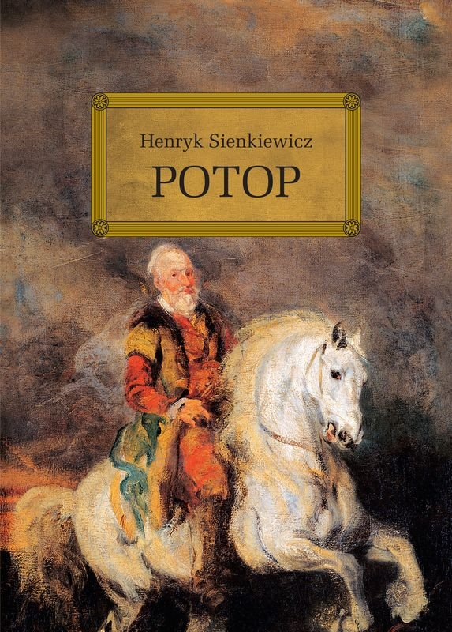
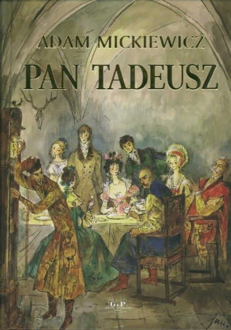

Moje Ulubione Książki
Lalka

Lalka autorstwa Bolesława Prusa to powieść społeczno-obyczajowa publikowana w odcinkach w latach 1887–1889 w dzienniku „Kurier Codzienny”, wydana jako książka w 1890 w Warszawie. Jest to powieść o trzech pokoleniach idealistów. Pierwotnie powieść miała nosić tytuł Trzy pokolenia i udowodnić tym samym bankructwo ideologii romantycznej i pozytywistycznej wobec rodzącego się wieku kapitalizmu.
Zbrodnia i kara

Zbrodnia i Kara autorstwa Fiodora Dostojewskiego to powieść napisana w 1866 roku i w tym samym roku opublikowana w odcinkach w czasopiśmie „Russkij Wiestnik”. W formie książkowej ukazała się w 1867, a w Polsce wydano ją po raz pierwszy w latach 1887–1888. W utworze zawarte są przemyślenia autora na temat sprzecznych ze sobą idei i otaczających człowieka przeciwieństw. Sam wątek zbrodni jest punktem wyjścia do rozważań, dotyczących zestawień takich problemów, jak: dobro i zło, wiara i brak wiary w Boga, wolna wola człowieka i bezwzględne podporządkowanie się władzy.
Nad niemnem

Nad Niemnem autorstwa Elizy Orzeszkowej to powieść pozytywistyczna z 1888 roku. Utwór przedstawia panoramę polskiego społeczeństwa drugiej połowy XIX wieku, nawiązując również do czasów powstania styczniowego. Powieść publikowano po raz pierwszy w odcinkach na łamach „Tygodnika Ilustrowanego” od stycznia do grudnia 1887.
Potop

Potop autorstwa Henryka Sienkiewicza wydany w 1886 roku opowiada o potopie szwedzkim z lat 1655–1660. Głównymi problemami poruszanymi w powieści historyczno-obyczajowej Henryka Sienkiewicza „Potop” jest odrodzenie moralne Polaków, postępujące odwrotnie proporcjonalnie do przejmowania kolejnych terenów Rzeczypospolitej przez Szwedów oraz miłosne perypetie Andrzeja Kmicica i Oleńki Billewiczówny.
Pan Tadeusz

Pan Tadeusz, czyli ostatni zajazd na Litwie to poemat epicki autorstwa Adama Mickiewicza wydany w dwóch tomach w 1834 w Paryżu przez Aleksandra Jełowickiego. Mickiewicz opisuje życie i obyczaje szlachty w schyłkowym okresie Rzeczypospolitej szlacheckiej. Głównym celem poety było ukazanie i obudzenie w narodzie uczuć patriotycznych, rozbudzenie nadziei na przyszłość.